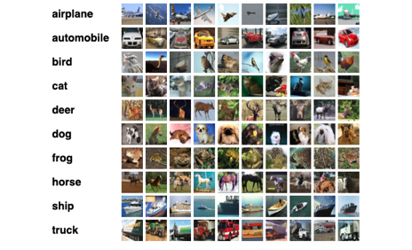
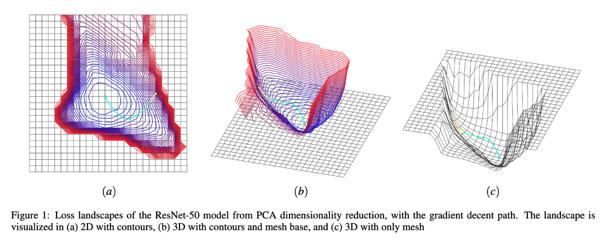
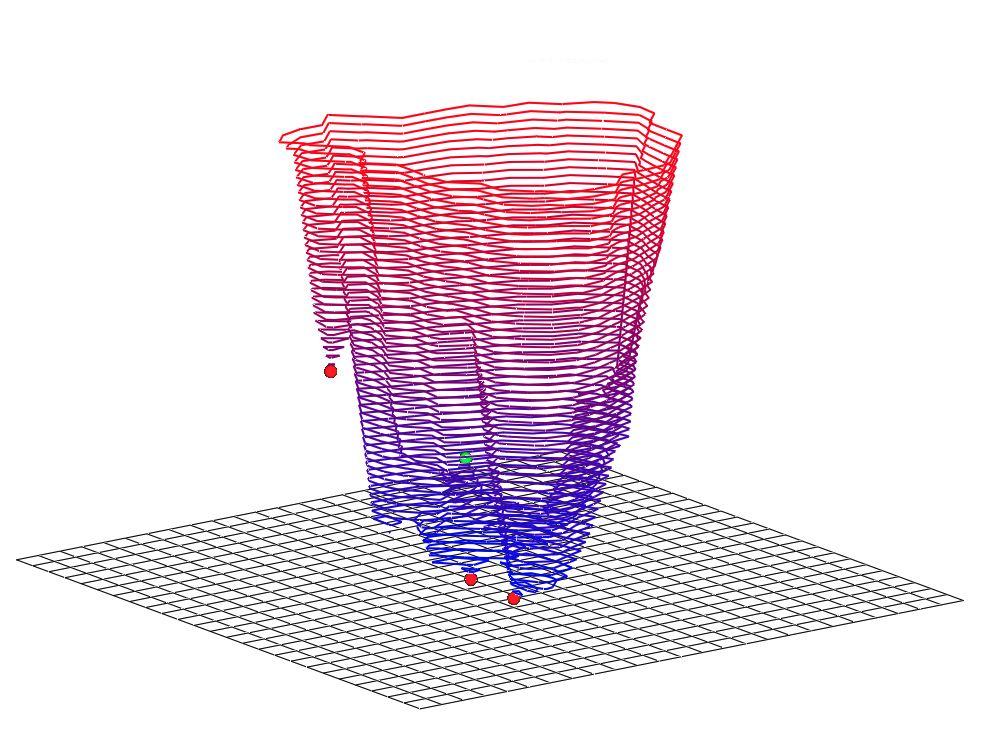

The path to convergence on a loss landscape.
Training artificial neural networks is a sensitive process due to architecture choices and hyperparameter tuning. By visualizing both the model’s loss landscape and path during gradient descent towards some local minimum, we can gain intuitions about how tuning and architectural decisions impact the model’s ability to converge. In this project, Chase Ison and I visualize loss landscapes of a convolutional neural network by implementing two separate methods proposed by Li et. al. in "Visualizing the Loss Landscape of Neural Nets." For each method, we perform dimensionality reduction on a model’s weights during backpropagation, then iteratively manipulate the weights using these techniques to generate scalar fields termed 'loss landscapes'. Finally, we evaluate our results on two popular neural network models: ResNet-50 and VGG-11.
The project was the open-ended final for CS 453 - Scientific Visualization at OSU in fall 2022. This post will just be a quick overview of the project and some our results. I recommend that you read our complete final report linked here for more details.
We chose to visualize two convolutional neural networks: ResNet-50 and VGG, each trained to classify images of the CIFAR-10 dataset. For each model, we generated two different loss landscapes from the two techniques detailed by Hao Li et al: random direction iteration and principle component analysis (PCA).

CIFAR-10 dataset examples.
Our process for generating the visualization went as follows:
You might be wondering why we use two different versions of dimensionality reduction? Random direction iteration is essentially the simple way to generate a loss landscape, which was nice to do first just to make sure we were getting a good result. On the other hand, PCA gave us meaningful insights and allowed us to trace the path of the model converging as it minimized the loss.

Loss landscapes of the ResNet-50 model from PCA dimensionality reduction, with the gradient decent path.
TODO: talk about exactly what the results mean!!!

The 3D loss landscape with critical points labelled for the ResNet-50 model using random direction iteration for dimensionality reduction.
I'd give this project five starts in that it pushed me to understand dimensionality reduction and what we can learn from loss landscapes. The project stressed a lot of different skills- being able to write PyTorch code, being able to write dimensionality reduction code, training the models on a high performance cluster, formatting the data, and visualizing it with custom OpenGL code. I'm thankful to have had Chase as my project partner for knocking this project out within a week!
You can find the entire codebase as well as our final report in our github repo linked here.